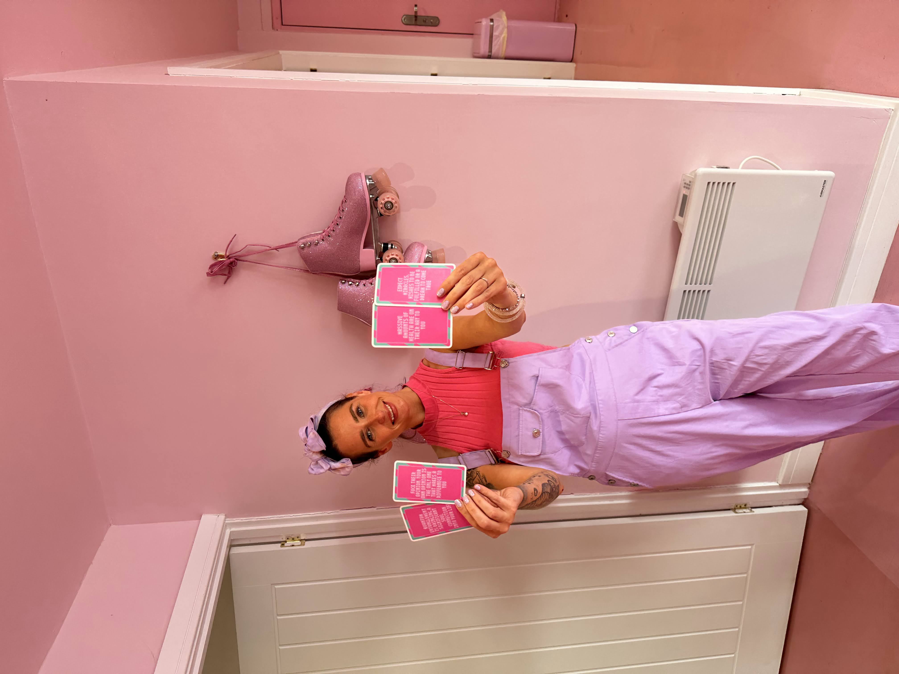

Energy reader and healer
Your thoughts and your feelings are creating your reality every single day, and I don't mean that in a fluffy way, I mean it literally. A reading shows you what's actually sitting in your field right now, what you're pulling towards you without even realising you're doing it, and where all of it takes you if nothing shifts.
Book your readingReadings from £20.

Inside a reading
We open with your field. I read the general energy around you first, using several decks, so we can see what you're carrying before we go anywhere near the detail.
The thoughts actually running the show up there. What's on a loop, what's draining you, and what genuinely needs sorting out.
The main feelings sitting in your field. What you're holding onto that's blocking your next blessings from reaching you, and how to put it down.
A message straight from your higher self. Whatever it is you most need to know right now, however it wants to come through.
Spirit and science
People treat this whole world like it's something you either believe in or you don't, and honestly I think that's the biggest misunderstanding out there. Because none of this is faith. Every single piece of it is measurable, it has been measurable for decades, and the average person has just never been told. So let me show you.
Thinking is electrochemical activity between neurons, and it's measurable. That's what an EEG is reading when it's stuck to somebody's scalp.
Your heart and your brain generate magnetic fields that can be detected outside your body using sensitive enough magnetometers. That's what magnetocardiography is. The heart's is the strongest one you've got.
Any circulating current produces a field with the same geometry, a doughnut shape that flows out of the top, wraps all the way around and folds back in underneath. Your heart is a circulating current, so that's the shape of the field it's putting out.
The Earth has exactly the same shape of field on an enormous scale, and it has a measured resonance sitting around 7.83 hertz. Human brainwaves in a calm, relaxed, receptive state sit in almost exactly that range.
Emotional contagion is well documented, and so is physiological synchrony, where two people in close contact drift into matching heart rhythms and stress responses. Research at the HeartMath Institute has recorded one person's cardiac signal showing up in another person's brainwave data when they're near each other.
Neurons that fire together wire together. The thought patterns you run most often become the ones that run most easily, which is exactly why some loops feel completely automatic.
Attentional bias is well documented. Whatever you're holding your focus on is what your brain flags up out of all the noise, so your inner state genuinely does change what shows up in your day.
Placebo and nocebo effects are measurable in controlled trials. What you believe is about to happen to your body has a real, physical effect on your body.
Feelings are chemical and hormonal states moving through your entire system. Whatever you're sitting in emotionally is doing something physical to you right now.
So think about what that actually means. You are walking around inside a field you're generating, standing inside a much bigger one the planet is generating, and every single person you come into contact with is doing exactly the same thing. When you're near somebody, those fields are not politely ignoring each other. Information is being exchanged, constantly, underneath every conversation you've ever had.
Which is why you already know how to do a version of this. You've walked into a room and felt the atmosphere before a word was said. You've met somebody perfectly polite and come away thinking no, something's off there. You've had someone walk in and lift the whole energy of the place. That's not you being dramatic or imaginative. That's you reading a field, and everybody does it, most people just talk themselves out of what they picked up.
I don't talk myself out of it. I've spent years learning to sit with that signal, sharpen it, and put words to what's actually coming through instead of dismissing it.
And none of this is new either. It was written down thousands of years ago as the Hermetic principles, long before anybody had an instrument sensitive enough to measure a single bit of it. Physics didn't replace that. Physics caught up to it, walked in with different equipment, and gave it a different name.
Nothing rests. Everything moves and vibrates.
Tesla built his life's work on resonance and oscillation, on the understanding that energy moves in waves and that matching a frequency amplifies it. Modern physics describes matter itself as excitations in underlying fields. Solidity is what vibration looks like from the outside.
The universe is mental in nature.
Max Planck, who founded quantum theory, said plainly that he regarded consciousness as fundamental and matter as derived from it. Niels Bohr's work established that a quantum system holds no definite value until it is observed. Observation is not passive in physics. It participates.
As above, so below. As within, so without.
Your inner state shapes your outer life in ways that are measurable. Attention decides what you perceive. Expectation changes what your body does. The world you experience is not separate from the state you are in while you experience it.
Nothing happens by chance.
Every pattern you are living inside started somewhere. Neuroplasticity shows that repeated thought carves the pathway it then runs down automatically. Find the cause and the effect stops being your personality.
This is the ground I read from, and it's why I don't think you have to choose. The ancient framework and the modern evidence are describing the exact same thing, and once you can see that, so much of what's been happening to you starts making a lot more sense.
How it works
Every thought you think, every feeling you've been sitting in, every belief you picked up as a child and never once questioned since. All of it is energy in motion, all of it radiates out of you, and all of it quietly gathers matching things back to you. That's the bit most people never get told.
What I do is read what's in yours. The cards themselves have no power at all, and anyone telling you otherwise is selling you something. They're the surface it lands on, so that we can both look at the same thing and talk about it properly instead of me just telling you how I feel about your life.
And that's exactly why I'll never hand you some fixed future. There isn't one. If your thoughts and your feelings built this pattern, and they did, then your thoughts and your feelings can build a completely different one. That is the whole reason to look at it.
Straight from Instagram
These are real screenshots, exactly as they were sent to me or posted publicly. Nothing rewritten, nothing tidied up.
Tap any of them to read it properly.
Three ways in
One question, answered properly
£20
Send me the question that keeps going round your head. I'll pull on it and send you a photo of your cards with a voice note reading them out, straight to your Instagram or Facebook DMs.
Send your questionAnywhere in the world
£55
Your full reading, recorded and sent straight over to you. Yours to keep, which matters more than you'd think. Most of it lands properly on the second listen.
Book a TransmissionIn person in the North East
£60
You, me and the cards on the table. Ask me anything as we go and we'll follow it wherever it opens up. Nothing feels the same as being in the same room together with our energy fields in close proximity.
Book in personAddress shared privately once your booking is confirmed.
Healing
Your nervous system has two gears. One is for handling threat and one is for repairing, and most people are running the first one nearly all the time without ever noticing. Your body can't do its repair work while it's braced. This is how you put it down.
Reading and healing together
£90
A full in person reading, then healing straight after while everything is still open. The reading finds it, the healing shifts it. That's why they belong together, and why it's the one I'd point you towards. Saves you £10 on booking them separately.
Book CoherenceHealing on its own
£40
No reading attached. You stay fully clothed and you don't have to do anything except lie there. There's nothing you need to believe in advance for it to be worth putting your system down for a while.
Book healingIn person in the North East. Address shared privately once your booking is confirmed.
Private groups
A private evening for you and your group. Everyone gets their own reading with me, one at a time, in a separate room, so you can say anything without the rest of them hearing it.
The rest of the night you're manifesting together and having fun creating your dream boards and embracing your spiritual side. Everything's laid out ready and there's a teaching video taking you through how to build one, and the psychology and neurology of why it works.
Cards, crystals, sage, food, drinks, journaling prompts and a goody bag to take home. Everything's provided.
£111 per person
Enquire about a dateParties of 5 to 9 guests. A £30 per person deposit secures your date, with the balance settled on the evening.
Good, bring it with you. I would far rather read for somebody who's questioning all of this than somebody who'll nod along at absolutely anything I say. You don't have to believe a single word in advance. You just have to be willing to look at what comes up and be honest with yourself about whether it lands.
Most people who book me haven't. You don't need to know anything, believe anything, or say the right things. You turn up, I read, you listen. And if you'd rather nobody knew you'd been, nobody will. What comes up in a reading stays between us, always.
I won't, because there's nothing fixed to tell you. What I read is what's live right now and where it's heading if nothing changes. Anything difficult comes with what to do about it, and we never leave it sitting there open.
You don't need a question for a Transmission or an Attunement. I open with your general field and it takes us where it needs to go. Only the Download needs a specific question from you.
Then a Transmission is yours. Distance makes no difference to a reading, and you get the recording to keep, which people in the room don't.
I'll come back to you personally to sort the details. Nothing automated, no forms to fill in, just me.
You don't always get told what you want to hear. But you always hear what you needed to be told.
I think of my readings as personal development more than anything else, because that's genuinely what they are. We look at what's really there, honestly and kindly, and then we work out what you're going to do about it. It's healing work as much as it's reading work, and that side of it matters to me every bit as much as being accurate does.
People expect spirit and science to be on opposing teams and they're really not. They're two languages describing the exact same thing, and I happen to speak both of them. That's why I do this the way I do, and it's why the people who come to me tend to be the ones who were never quite satisfied with either half on its own.
Start with one question, or open up the whole field. Most people are a bit nervous about what might come up and leave feeling lighter than they've felt in a very long while.
Book your readingAlso from me
What's quietly hijacking your health, who profits from it, and a full protocol to take it all back. Every claim referenced so you can check it yourself.
Read about the book